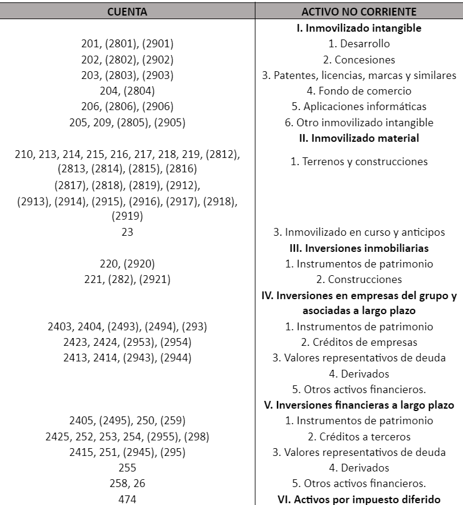
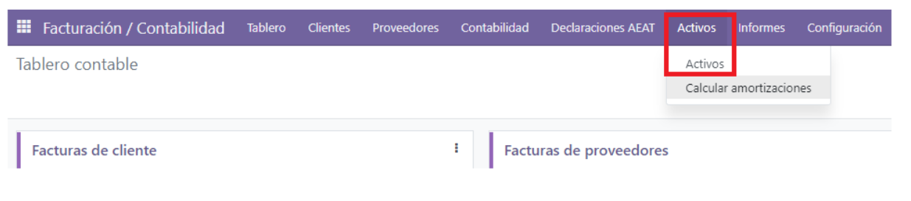
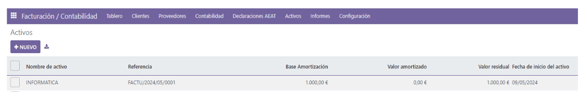
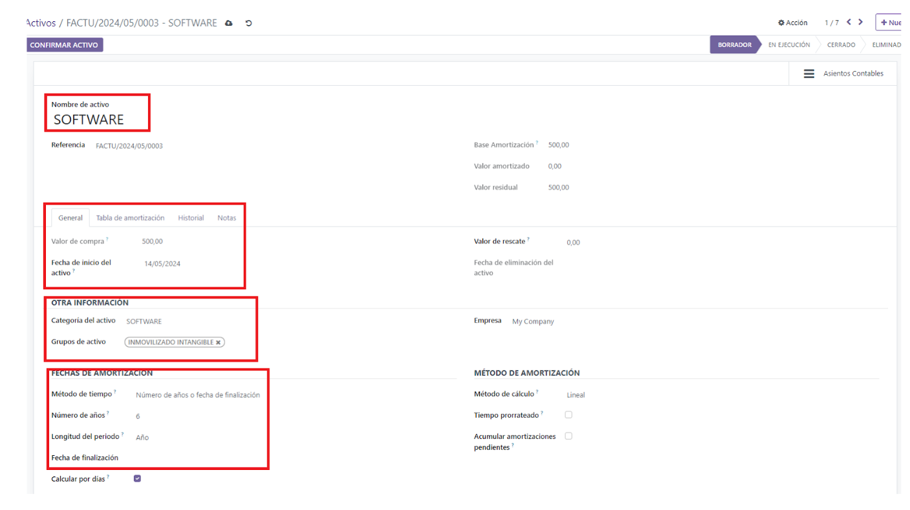
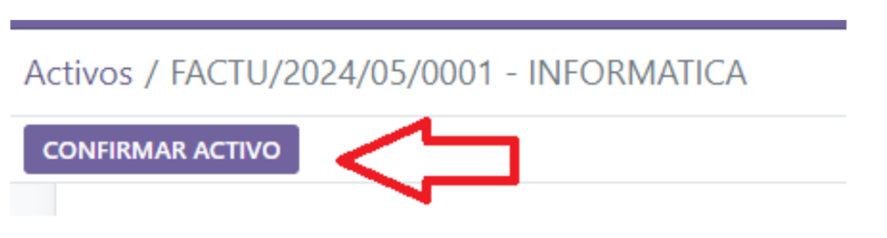
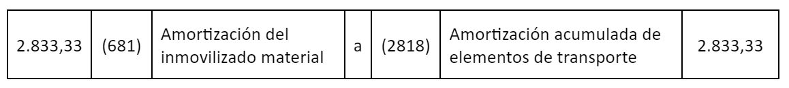
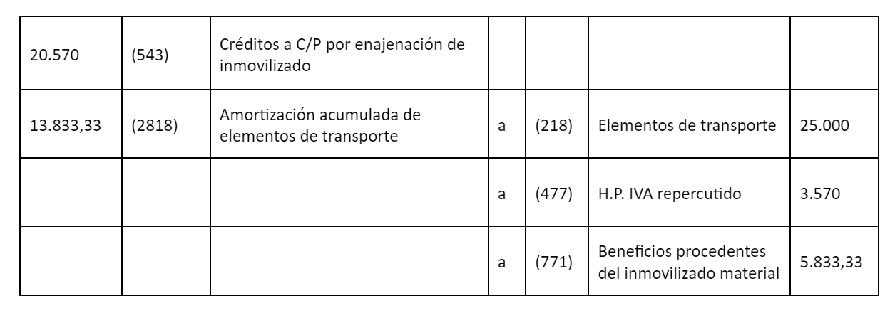
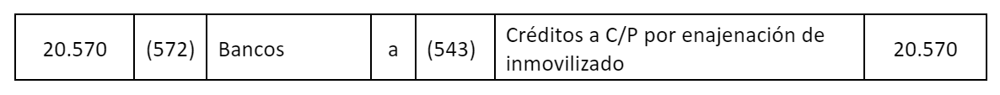

Non-current assets and fixed assets¶
Assets are the most important part of the business since they are the main source of income, and this income increases profits and results in business growth. Therefore, it is important to provide a brief introduction to understand assets and their different types, in order to clearly differentiate them.
There are different types of assets, the most common being current, non-current, physical, intangible, operational, and non-operational. For a company, it is essential to correctly identify and classify the types of assets, so it can maintain solvency and manage the income associated with them.
Fixed Assets or Non-current Assets¶
Non-current assets are those that cannot be easily or quickly converted into cash and cash equivalents. That is why they are also called Long-term Assets or tangible or intangible assets that cannot be used for sale but are necessary for the proper functioning of the company. We can mention a few examples:
Land or properties.
Buildings.
Machinery.
Equipment.
Patents.
Trademarks.
Furniture.
Vehicles.
Other assets.
A tangible asset is one that has a physical presence and can be touched, whereas an intangible asset does not have a physical presence but holds economic value for the company.
Accounts Involved in Non-current Assets¶
Example of a non-current fixed asset. Suppose a company acquires a software program for 1,000 euros plus VAT at the general rate and an additional 300 euros for training courses so that employees can learn to use the software. Professional training and development are exempt from VAT.
For the acquisition of the software: We record the invoice for the software program: 1,000 (206) Software Applications → (572) Bank Accounts €1,210 210 (472) VAT Payable (21% * 1,000)
How to make this entry in Odoo¶
Suppose the asset category is already set up (see asset categories). In this case, we record the invoice (see supplier invoices), but instead of indicating an expense account in the Debit, we indicate the asset account as in the example. When saving the invoice, the asset is automatically created, and we would see it as follows:
 We will see that the asset has been created from the invoice. We enter the asset and must review everything highlighted in red: that the asset name is correct (it can be edited), the purchase value, the start date (which takes the invoice date), the asset category, and the asset group, which are very important. The depreciation method, the years, and the term should not be changed unless the term is to be shortened, or for that asset, the term is to be changed (monthly, quarterly, or yearly).
If everything is there, we indicate CONFIRM ACTIVE
The same applies to tangible fixed assets. It may happen that there is a sale of the fixed asset, whether intangible or tangible.
Example of how to account for the sale of a tangible fixed asset:
Before entering the accounting process itself, it is necessary to clearly understand the concept of the net book value of a fixed asset because, as we will see, it must be used. In this sense, when valuing an item at a given time, it is important to consider the depreciation it has undergone. Therefore, the net book value of a fixed asset is the difference between its acquisition value and its accumulated depreciation.
Let’s take an example.
A vehicle was purchased for €10,000 and is depreciated annually at 12% (€1,200 per year). Its net value after six years will be €2,800, which is the result of subtracting the acquisition value (€10,000) from the accumulated depreciation over six years (€7,200).
Specific Accounting Accounts In addition to the fixed asset account itself and its accumulated depreciation, the main accounting accounts used are: 1.- To reflect the profit from the operation:
770 Profits from intangible fixed assets 771 Profits from tangible fixed assets 2.- To record the loss from the operation: 670 Losses from intangible fixed assets 671 Losses from tangible fixed assets 3.- To record outstanding receivables: 253 Long-term receivables from fixed asset sales 543 Short-term receivables from fixed asset sales
Steps to Follow¶
Step 1¶
Make the depreciation entry for the asset for the portion that corresponds to the date of the sale. If the sale occurs on May 31, for example, the depreciation entry would need to be made for the five months the asset was part of the company’s assets, and the amount would be €500 (the result of dividing €1,200 by 12 and multiplying by 5).
Step 2¶
Calculate the net book value of the fixed asset being sold. Net Value = Acquisition price – accumulated depreciation In our example, it will be €2,800 €10,000 – €7,200 = €2,800 net value
Step 3¶
Determine whether the operation generates a loss or a profit. To do this, calculate the difference between the net book value and the sale price. If the vehicle is sold for €5,000, the company will make a profit of €2,200 on the transaction (€5,000 – €2,800). If, on the other hand, the sale price is €1,400, there will be a loss of €1,400 (€1,400 – €2,800).
Step 4¶
Make the accounting entry, keeping in mind that:
-Both the account for the fixed asset being sold and its accumulated depreciation must be written off. -The profit or loss from the operation must be recorded using the appropriate account depending on whether it is a tangible or intangible fixed asset.
Example
Let’s imagine our company sells a vehicle that was purchased a few years ago and is recorded in accounting with an acquisition price of €25,000. It is depreciated at 16% annually, and the accumulated depreciation as of December 31 of the previous year amounts to €11,000. The sale price is €17,000 plus 21% VAT, for a total of €20,570, which is collected by bank transfer on the day of the transaction.
The calculations to be made are: 1.- The depreciation amount corresponding to December 15: €25,000 x 16% = €4,000/year €4,000 / 12 x 8.5 (months from January to September 15) = €2,833.33 2.- The profit or loss from the transaction: Net book value = acquisition price – accumulated depreciation Net book value = €25,000 – €13,833.33 = €11,166.67 (The accumulated depreciation is the result of adding the €11,000 from the previous year and the €2,833.33 from the current year). If we subtract the net book value (€11,166.67) from the sale price (€17,000), we find that the company has gained €5,833.33 from the transaction.
Therefore, these are the accounting entries that should be made:
1.- For the depreciation from January 1 to September 15:
2.- For the sale entry:
3.- For the collection
For instance, Ver tabla de amortización por coeficiente AEAT.